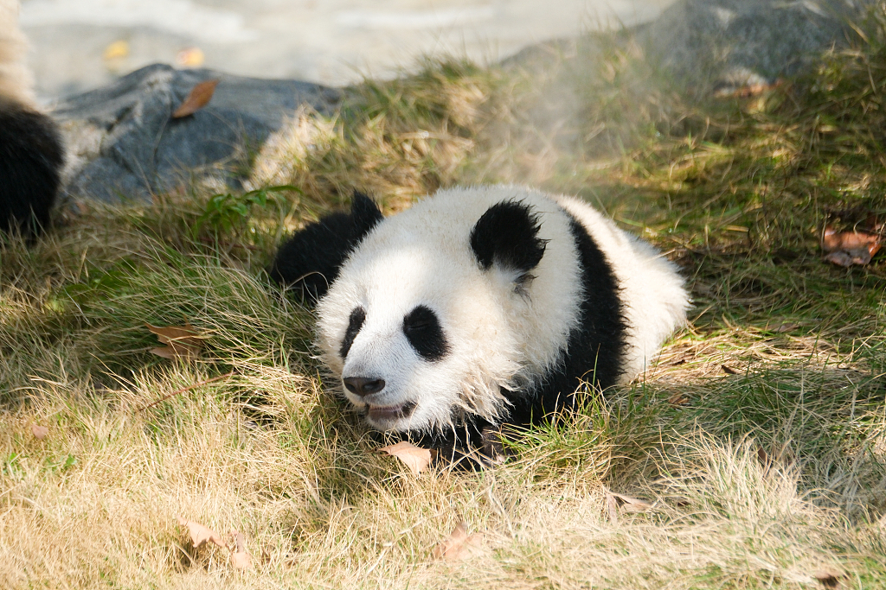
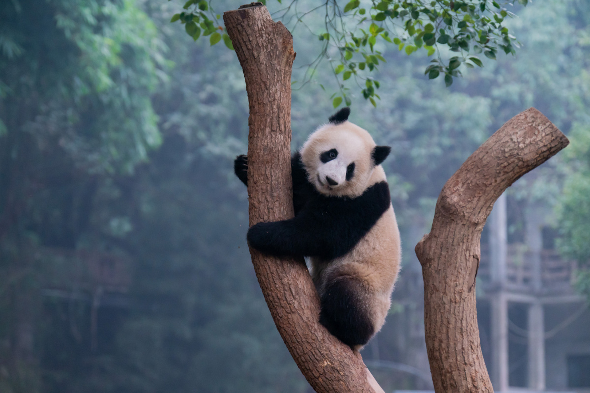
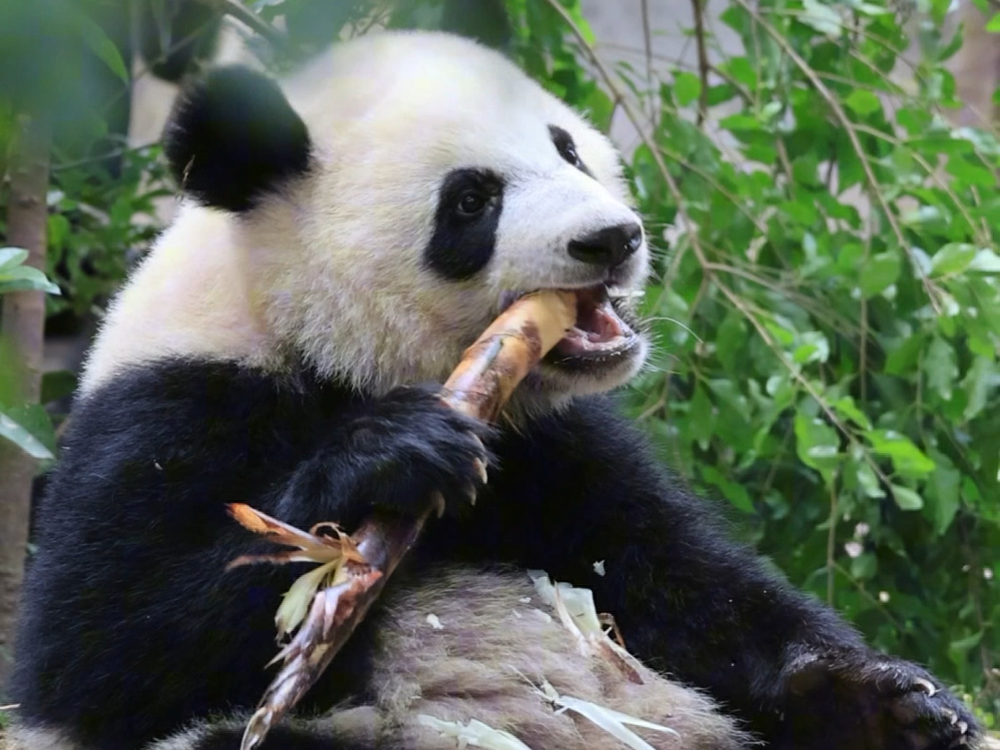
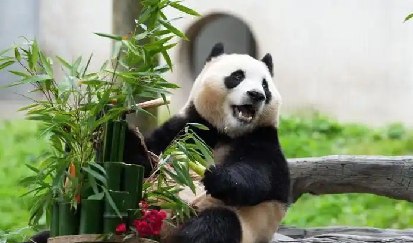
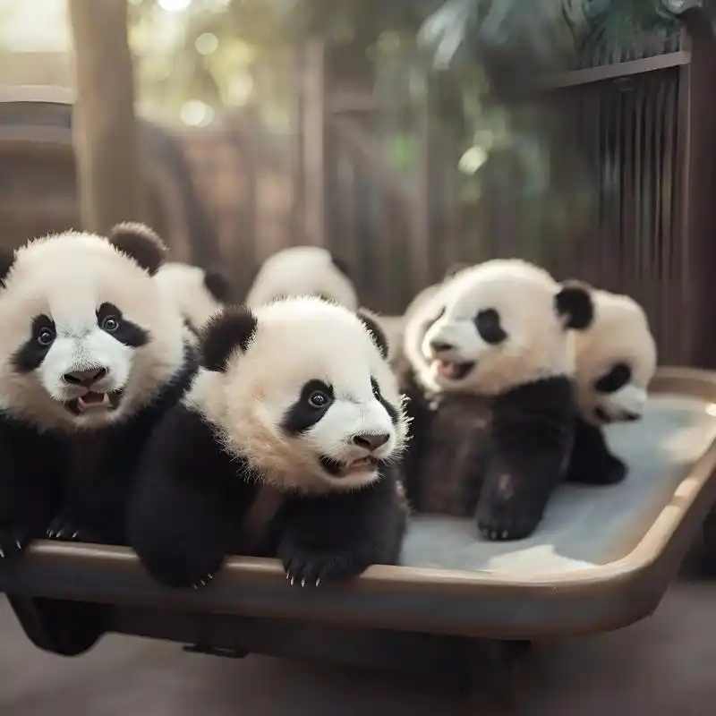
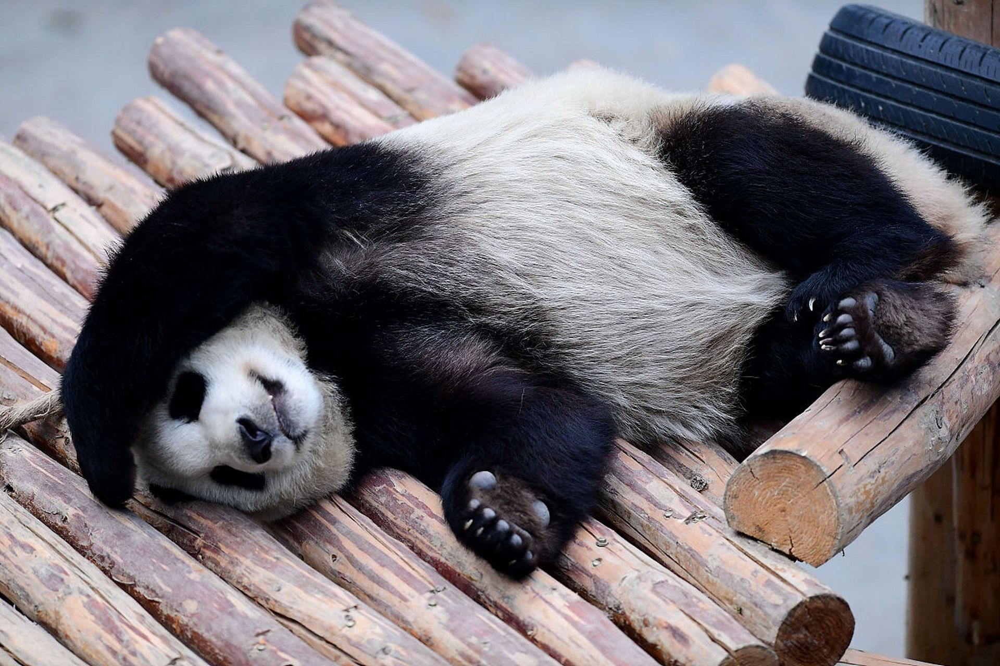

大熊猫，被誉为 “活化石” 和 “中国国宝”，是世界上最可爱的动物之一。它们有着圆滚滚的身材，黑白相间的毛色，模样憨态可掬。大熊猫的头部和身体毛色黑白分明，眼部有大大的 “黑眼圈”，看起来就像戴了一副墨镜，十分呆萌。
它们主要以竹子为食，食量惊人。大熊猫性格温顺，动作缓慢，总是一副悠闲的姿态。由于生存环境的变化和自身繁殖能力较低，大熊猫数量稀少，属于濒危物种。中国一直致力于对大熊猫的保护和繁育，让这一可爱的物种得以延续。
为了保护大熊猫，我国建立了多个自然保护区，为它们提供适宜的栖息环境。同时，科研人员也在不断努力，研究大熊猫的生态习性和繁殖技术。许多动物园也参与到大熊猫的保护工作中，通过开展科普教育活动，让更多的人了解和关心大熊猫。大熊猫不仅是中国的珍稀动物，也是全球生物多样性保护的象征。
可爱的大熊猫
- 
晒太阳的大熊猫
- 
爬树的大熊猫
- 
吃竹笋的大熊猫
- 
张望的大熊猫
- 
玩耍的大熊猫
- 
酣睡的大熊猫